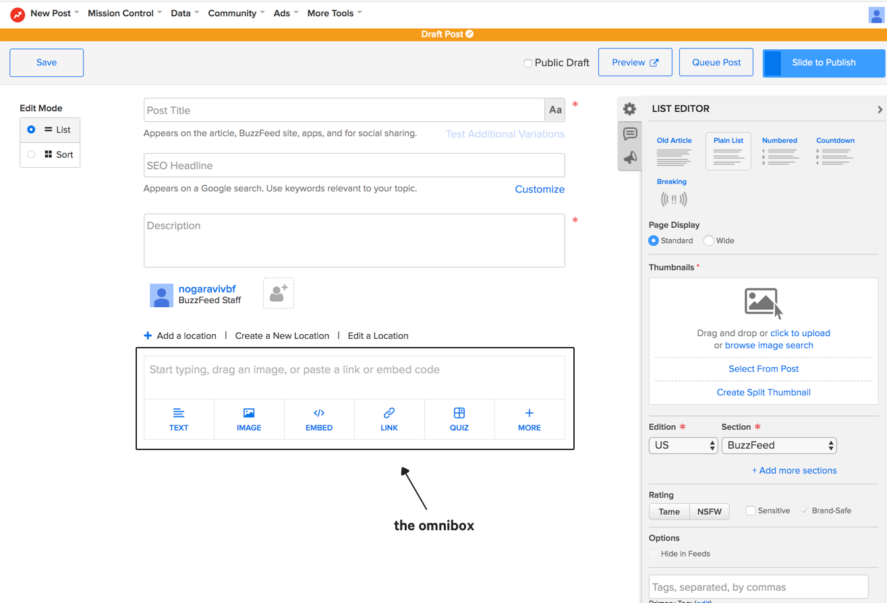
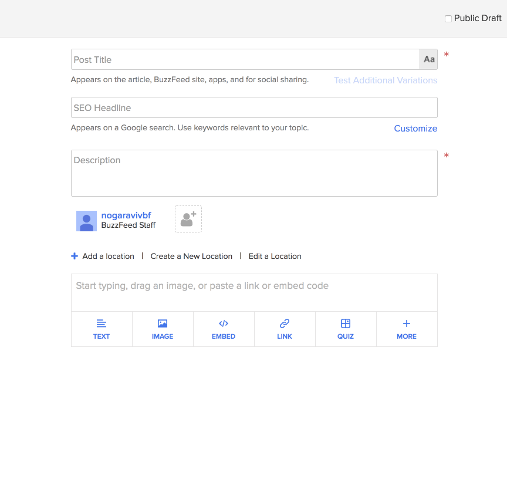
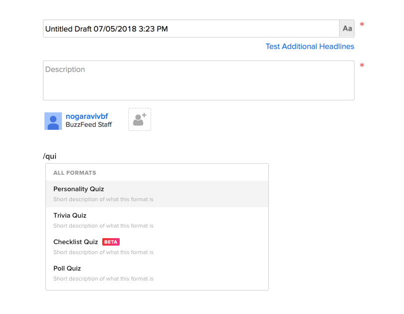
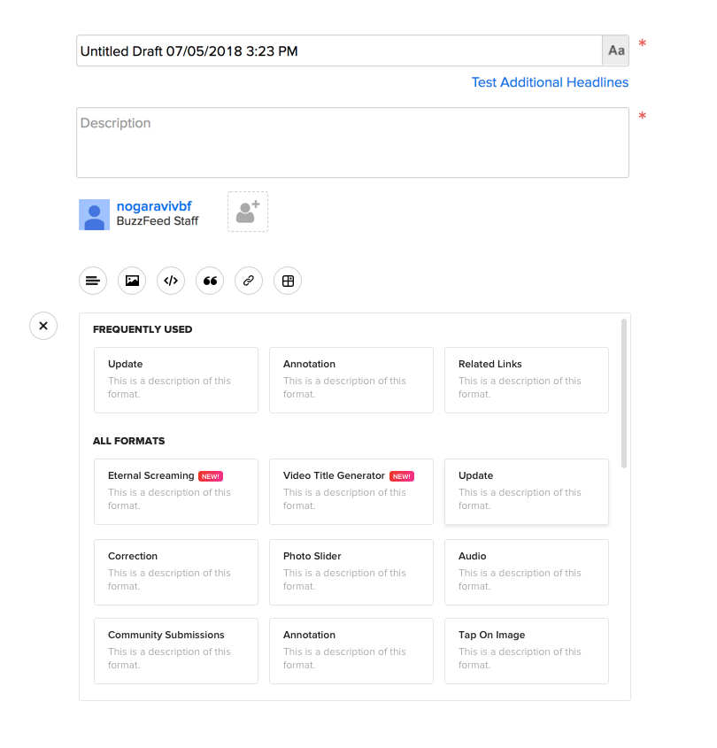
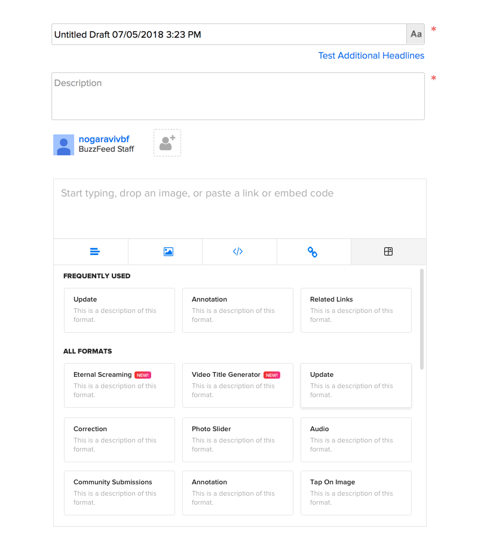
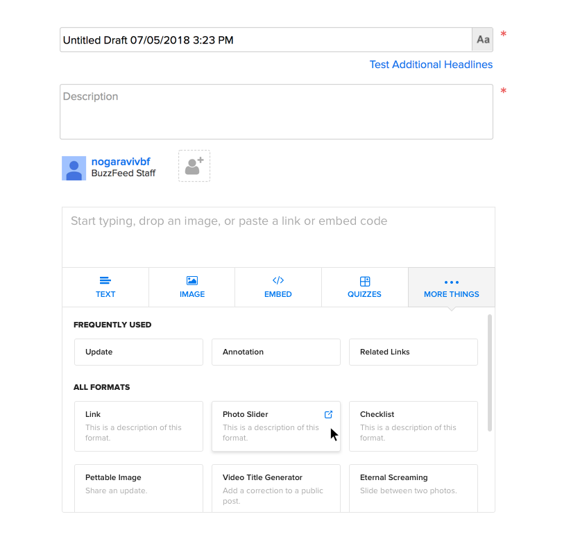

CMS Omnibox
BuzzFeed's CMS is the place where all of BuzzFeed posts published and created. Recently, BuzzFeed has had several initiatives to create new types of formats (or different ways of interacting with and viewing posts).
Currently, all of our formats live in what we call an Omnibox:
However, the omnibox was designed with a very specific number of formats in mind - we didn't expect to create so many more!
With the new addition of formats, our "more" dropdown became suuuuper long:
So long that our editors literally needed to scroll down the page to see it.
During hackweek, I took a stab at fixing this. I made dozens of explorations - including replacing the omnibox and rethinking how the CMS works entirely. For technical reasons we can't do all of that juuuust yet, but! we were able to replace the dropdown with a more sustainable solution.
Below are a few snapshots of my explorations while I work on writing a more thorough case study 🙃.
   